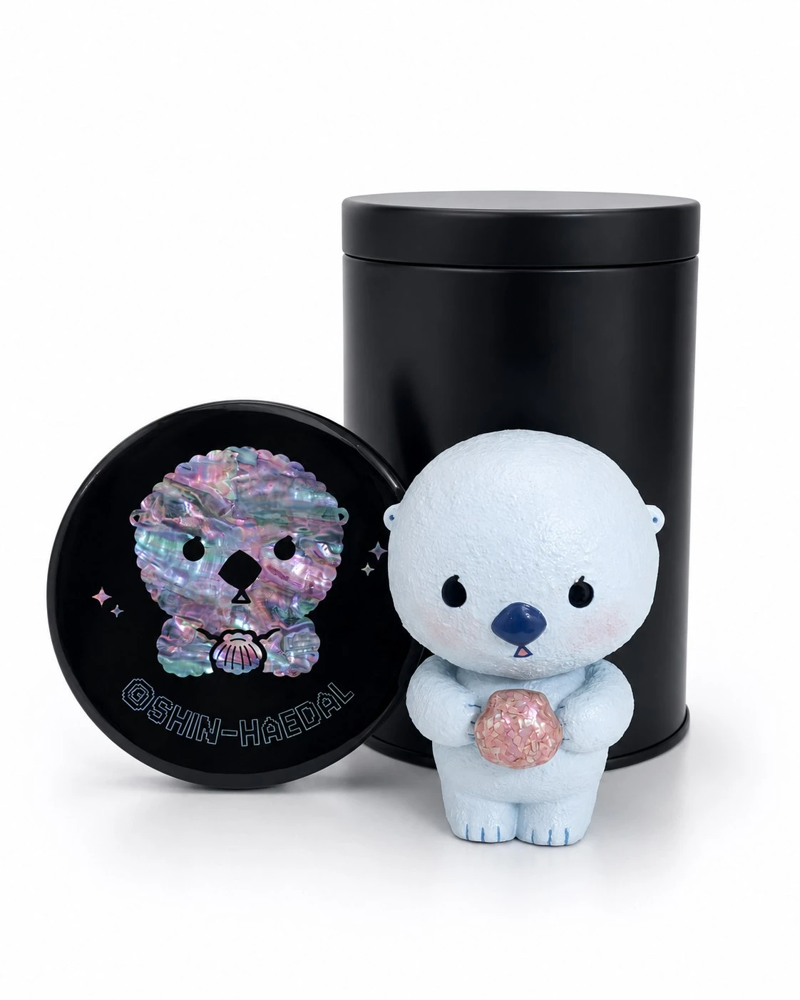

조개배달부 얼빵해달 2026 Limited EditionShell Delivery Spaced-out Sea Otter 2026 Limited Edition
Shell Delivery Spaced-out Sea Otter 2026 Limited Edition조개배달부 얼빵해달 2026 Limited Edition
굴패각 친환경 수지, 옻칠, 천연자개 · 10 × 9 × 6 cm · 2026Eco-friendly oyster shell resin, lacquer, natural mother-of-pearl · 10 × 9 × 6 cm · 2026
멍해 보이지만, 사실은 머릿속이 늘 딴 세상에 가 있다. 생각이 없는 게 아니라, 생각이 너무 많아서 겉으로는 멍하게 보일 뿐이다. 다른 해달들이 수영을 배울 때도 공상에 빠져 있다가 그만 배우지 못했다. 그래서 매일 두 발로 걸어 조개를 배달한다. 이대로는 안 되겠다 싶어, 얼빵해달은 스포츠센터 아침수영반에 등록했다. 얼빵해달이 배달하는 조개는 누군가에게는 마음이 되고, 누군가에게는 위로가 된다. 그리고 그 조개를 받는 이들 중 한 명인 작가 신해달에게는 나전칠기 작품의 재료가 된다.It looks spaced out, but its mind is always somewhere else entirely — not empty, just too full of thought to show on the outside. While the other otters were learning to swim, it drifted into daydreams and never quite caught up. So every day, it walks the shore on two feet, delivering shells instead. Enough is enough, it decided, and signed up for the morning swim class at the sports center. The shells it delivers become someone's comfort, someone's memory. And for one of the people who receives them — the artist Shin Haedal — they become the raw material of a mother-of-pearl lacquerware (najeonchilgi) work.
전시 이력Exhibitions
- 2026.08.06 – 2026.08.18 LOOPOP 2026 더현대, 더현대, 서울, 대한민국2026.08.06 – 2026.08.18 LOOPOP 2026 THE HYUNDAI, THE HYUNDAI SEOUL, Seoul, KR
- 2026.07.30 – 2026.08.02 어반브레이크 토이콘 서울 2026, 코엑스, 서울, 대한민국2026.07.30 – 2026.08.02 URBAN BREAK & TOYCON SEOUL 2026, COEX, Seoul, KR
- 2026.06.26 – 2026.06.29 CODE NAME: BLUE, 레온갤러리, 서울, 대한민국2026.06.26 – 2026.06.29 CODE NAME: BLUE, Leon Gallery, Seoul, KR